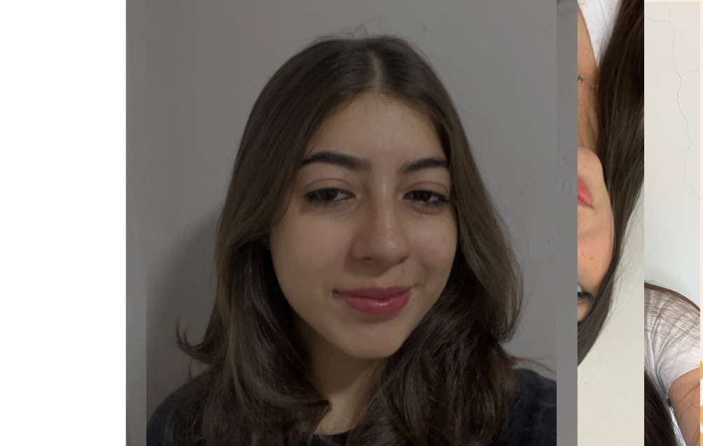
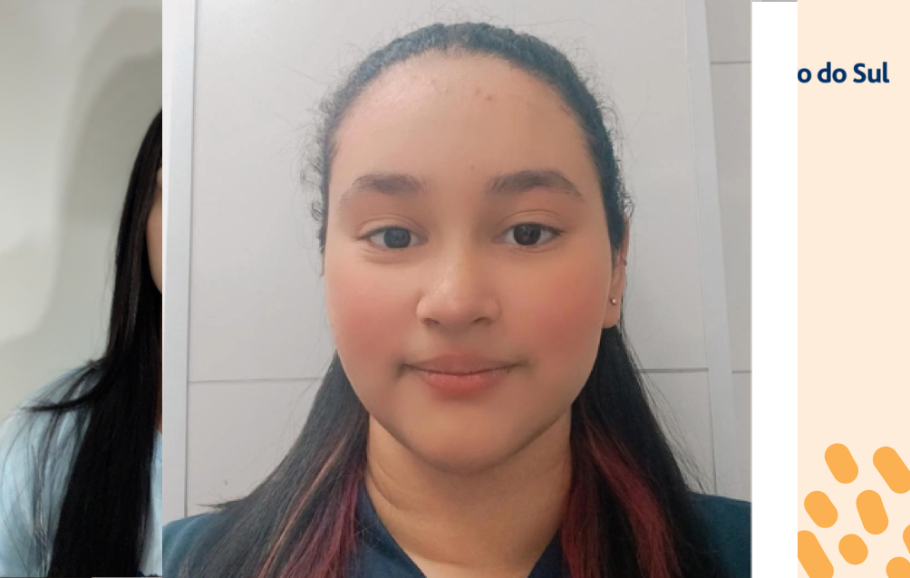
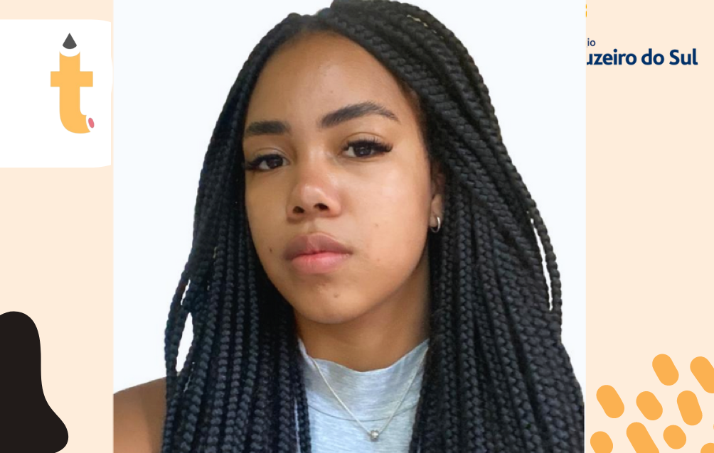
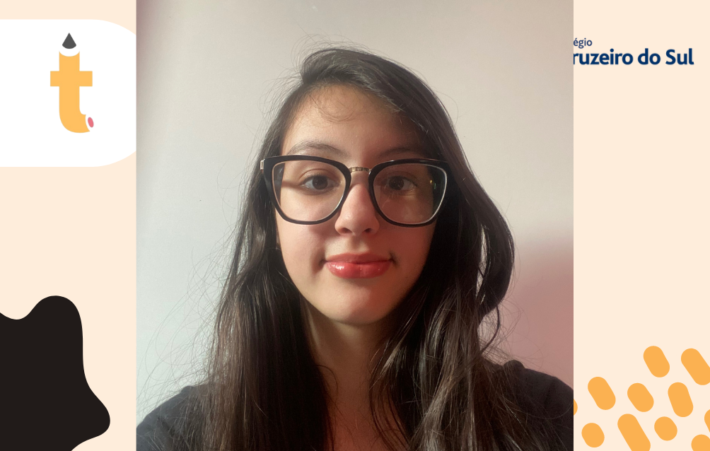
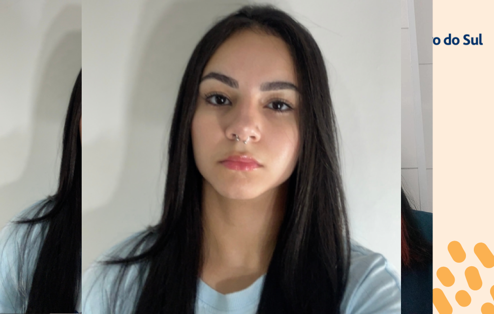
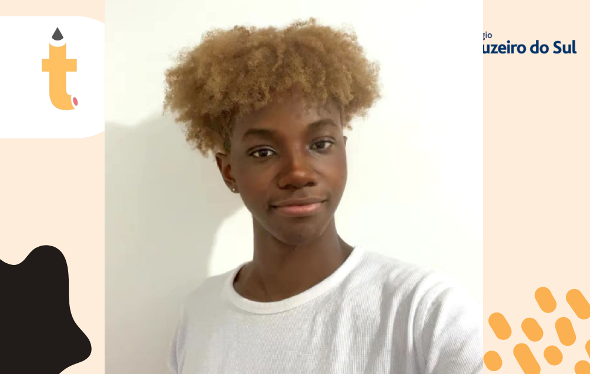

-> Como começou e como vamos evoluir
A Startup Transforma nasceu de um TCC com o objetivo de modernizar o setor educacional por meio da tecnologia. Nossa missão é desenvolver soluções práticas e inovadoras que atendam às necessidades em constante evolução de alunos e educadores. O primeiro projeto, a plataforma PROF, foi criado para facilitar o aprendizado e a gestão escolar, oferecendo um ambiente digital simples e eficaz.
Com o olhar voltado para o futuro, a Transforma planeja expandir sua oferta de soluções, incorporando tecnologias como inteligência artificial, aprendizagem adaptativa e análise de dados para aprimorar a personalização no ensino. Buscamos evoluir junto com nossos usuários, adaptando e melhorando continuamente nossas ferramentas para atender às demandas atuais e futuras do setor educacional.
->Com foco em evolução.
->Integrantes da Startup
-
Ana Julia Mendonça
Pesquisa e Documentação -

Ana Luisa Mendonça
Desenvolvedora Front-End | Design UX/UI | Marketing -
Anne Rodrigues
Pesquisa e Documentação | Desenvolvedora Back-End -

Beatriz Cavalcante
Banco de Dados -
Giovana Castilho
Desenvolvedora Front-End | Design UX/UI | Marketing -

Giovanna Marine
Pesquisa e Documentação -
Gustavo Siqueira
Desenvolvedor Back-End | Desenvolvedor Front-End -

Isabelly Amorim
Banco de Dados -
Julia Façanha
Desenvolvedora Back-End | Banco de Dados -

Mariana Lohanne
Pesquisa e Documentação | Banco de Dados -

Victhor Noé
Pesquisa e Documentação
->Acompanhe o projeto nas Redes Sociais!
Esteja por dentro dos preparativos para a nossa apresentação final.
 @transforma.prof
@transforma.prof